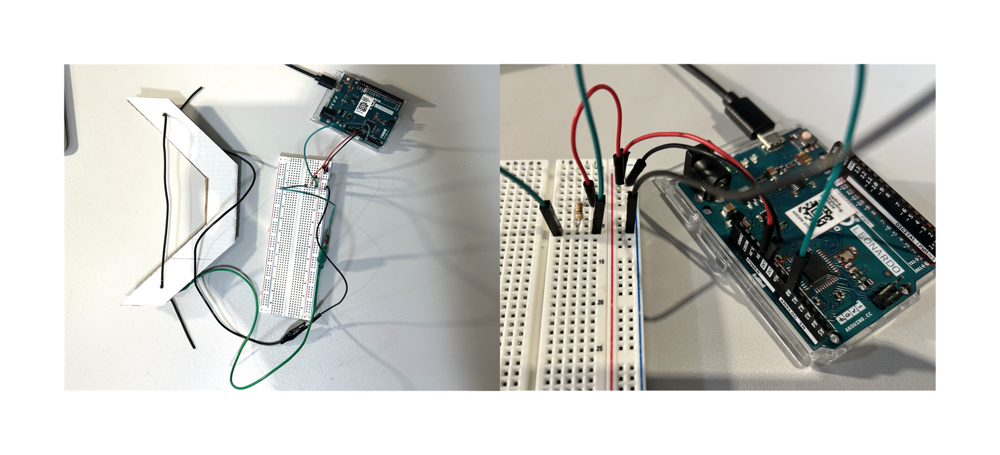

Overview
The Lead Arrow is a Valentine's Day game for singles, where the players take on the cupid-angel role, but with a twist. Instead of bringing people together, the aim is to break them up, using a the lead Arrow.
I designed the console to function like a bow, allowing the players the sensation of stretching and releasing a string. The same idea can be applied to slingshot games, where the players would use the console horizontally, instead of vertically. I used a stretch sensor for the console, which perfectly induces the feeling of using a real bow. Unlike a mouse or a joystick, a stretch sensor provides a more immersive and realistic experience of aiming and shooting.
The game is a single-player experience, where the player is represented with a bow and arrow on the screen. Since I was limited to using only one sensor, I could only give the player the control over amount of stretch and release. As a result, the bow points to a fixed position. Since I wasn't able to make the bow rotatable, I made the targets mobile, moving in a looping motion from side to side.
The game consists of four levels, with increasing difficulty in each stage. As the player progresses more targets appear along with obstacles that prevent them getting shot. Targets are represented with farm animals with heart shaped particles emerging from their heads. The obstacles are depicted with roses, reinforcing the Valentine's Day theme. Due to the bow's lack of rotation and orientation control, the game functions as a 2D game, although the environment is designed in 3D.
Supplies & Materials
Components Used
— Arduino Leonardo
— Conductive rubber cord stretch sensor
— 1 × 10kΩ resistor
— 2 × crocodile clips
— 6 × male to male jumper wires
— Breadboard
— Upcycled cardboard from parcel box

Process
1. Ideation for the console design
I decided that I wanted to create a slingshot game using a literal slingshot as a console, so I started to research what type of sensors I could use for this.
2. Concept development of the game theme and mechanics
I was thinking about the game concept, and since the project was due Valentine's Day, I decided that the theme can be related to it. This made me realise that the player as a cupid should use a bow and arrow instead of a slingshot, and the mechanics would still work the same for such a game.
3. Initial game development using mouse control
I needed to implement the game mechanics without the console first. So I developed a game that was playable via mouse control.
4. Testing serial data reading from stretch sensor
This was my first time using a stretch sensor so I learned how to create a circuit with a stretch sensor and write a code to enable serial reading from it.
5. Integrating stretch sensor into Unity
I made a blank sketch and followed the tutorial in Panopto to allow serial reading within Unity. However, this gave a timeout error and through classmates, I learned that I needed to do something called multithreading. I used ChatGPT to write the code for it.
6. Adding serial read into the game mechanics
I replaced mouse control with the serial data from the stretch sensor.
7. Collection and implementation of game assets and UI
So far, I had used very basic assets and UI elements, prioritising creating a game that was working. Then I started spending time on the visual and audio elements of the game. I used free assets found from various resources online.
8. Adding More Levels
I wanted to add levels to my game, however, in this process the serial reading started to give an error. I spent a lot of time debugging this issue.
9. Building the game console
I created a bow from cardboards that were upcycled from the parcel boxes I had been collecting. I inserted the stretch sensors like a string of the bow, via holes. The connection of the sensor to Arduino is provided by crocodile clips.
10. Debugging and final refinements
The final touches on the game visuals, audio and mechanics were made and final debugging was done.
11. Publishing the game
Since I wasn't able to publish the console controlled version of the game for the web, I published the mouse controlled version. I built the console controlled version as an app on my desktop.
12. Playtesting and gathering feedback
I asked friends and family to play the game and observed their reactions to further develop the game.
Video Demonstration
Final Images

Design Justification
The game's design is largely influenced by the technical limitations and my beginner level knowledge of Unity. The size of the console was constrained by the length of the stretch sensor and the dimensions of cardboard that was available.
During playtesting, I realised the transition between levels is not clear enough, so this issue can be further developed. To match the players' movement and interaction with console, the bow and arrow on screen can be positioned vertically, in a more 3D orientation, allowing the player to grasp a better feeling of their role in the game and how they are effecting the game. More visual depth can be added to the game for a more immersive experience. Additionally, the size and form of the console can be adjusted according to player feedback. The console can have haptic feedback, for a more tactile experience. This console can also be adapted for a difficult targeting game, by implementing precise orientation tracking.
Project Link
Play the mouse controlled version of the game
References
Tutorials
Play Background Music Throughout Levels
Assets
Bow and Arrow: Link
Targets: Link
Environment: Link
Music: Link
Sound Effect: Link